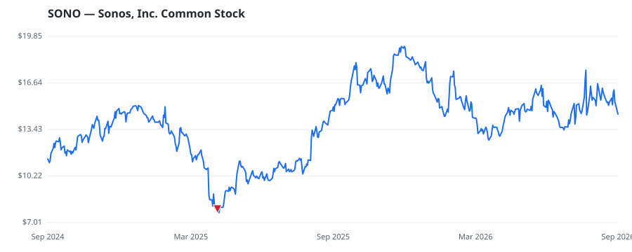

bullish · bearish · n/a — dots: price>SMA10 · SMA10>SMA50 · SMA50>SMA200 · up>down volume (20d)
Technology Hardware · small cap

Sonos Inc is an audio company dedicated to elevating life through sound, offering a connected platform that brings together music, movies, stories, and conversations. Its portfolio includes home theater speakers, components, plug-in and portable speakers and headphones, known for exceptional sound, thoughtful design, ease of use and seamless access to audio content. Its partner products and other revenue categories include accessories for home integration, such as custom-designed stands, mounts, and shelving units, along with partnerships for architectural speakers and automotive sound systems HOUSEHOLD AUDIO & VIDEO EQUIPMENT · website
| Revenue | $1.4B | Net income | $-61.1M |
|---|---|---|---|
| Operating income | $-50.5M | Diluted EPS | $-0.51 |
| Assets | $823.3M | Equity | $355.2M |
🛒 Newly buying: Ritter Alpha, LP (+26%, 3.1% of book)
| Fund | Fund alpha vs SPY | Position | % of book |
|---|---|---|---|
| Ritter Alpha, LP | +26% | $0M | 3.1% |
Hedge data: SEC EDGAR 13F · ranked funds beat SPY in >50% of their quarters · fund alpha = mirror-portfolio return minus SPY.